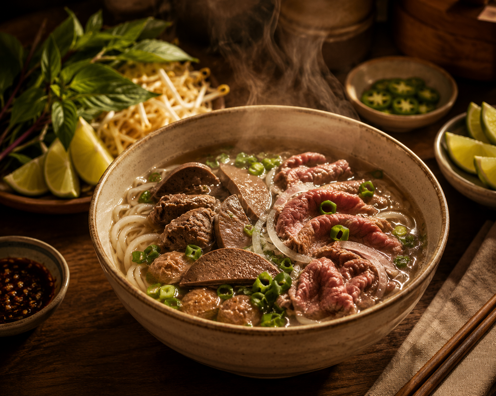

Chào mừng về nhà
The recipes that raised us.
A keeping place for the Vietnamese dishes our mothers and aunts cooked for us — written down at last, so all of us, and our children, can keep cooking them.

Mẹ Oanh's phở
Northern style. Clear broth. No star-anise. Just the way she made it.
In loving memory
For Mẹ — Oanh.
Cooking was how she showed her love. Even after a long day at work, caring for two kids, and running all the errands a family needs, she still found the energy to make a new dinner every night — and on weekends, to spoil us with meals that felt gourmet. This kitchen is hers; we’re just keeping the fire on.
❦
Bếp nhà
From our kitchen
Các Mẹ
The cooks
Every recipe came from somebody's hands. Search by dish, or by the one who made it.